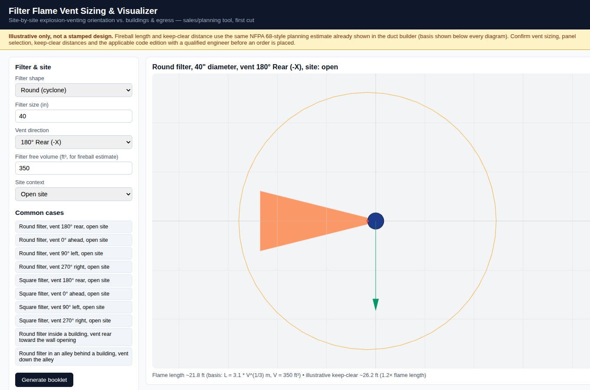

Before a dust filter is placed, someone has to ask where its explosion vent will point. This view shows the vent direction, an estimated fireball and a keep-clear zone against the site, for a first conversation and a site walk.

A plan view of a round filter with its vent facing rear. The orange cone is the estimated fireball and the circle is an illustrative keep-clear distance. The green arrow is the filter's orientation. The estimate's basis is printed under the drawing, using the same planning formula as the duct builder.
Common cases are one click away: round or square filters, vents in each direction, open sites, a filter inside a building venting toward a wall opening, and a filter in an alley venting down the alley. Generate booklet bundles the views for a site walk.
It is a sales and planning tool. The banner on every screen says the drawing is illustrative, not a stamped design. Vent sizing, panel selection, keep-clear distances and the applicable code edition must be confirmed by a qualified engineer before an order is placed.
Clip: stepping through vent directions and filter shapes.